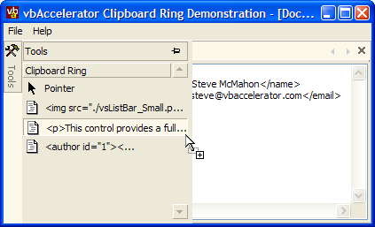

VB5 Clipboard Ring Sample (55K)
VB5 Clipboard Ring Sample (55K)
 VB6 Clipboard Ring Sample (52K)
VB6 Clipboard Ring Sample (52K)
 12 Feb 2003
12 Feb 2003
First Posted
 vbAccelerator Visual Studio Style ToolBox ListBar
vbAccelerator Visual Studio Style ToolBox ListBar
 Subclassing Without The Crashes
Subclassing Without The Crashes
 vbAccelerator Visual Studio Style Tab Control
vbAccelerator Visual Studio Style Tab Control

Clipboard Ring Sample
Demonstrates how to build a pinnable Visual Studio style clipboard ring using clipboard notifications and vbAccelerator controls
This sample uses the cClipboardViewer class to hook into clipboard change notifications, and then displays them in a pinnable ListBar in a similar manner to the Clipboard Ring functionality provided in Visual Studio.
To Run This Sample
You need a number of vbAccelerator controls to run this sample (although I recommend downloading them anyway because they're kinda cool):
- Visual Studio Style ToolBox ListBar Control
- Visual Studio Style Tab Control
- MDITabs Control
- Subclassing and Timer Assistant
Once you have these, you're ready to begin. Run the demonstration. Each time you copy something to the clipboard (from any application on the system), if it contains Text it will be added to the Clipboard Ring bar within the Tools tab. The sample limits the number of items to a maximum of 100 entries, after which it starts deleting the earliest ones; however you can change this limit to anything you want. To add an entry from the clipboard ring bar then either drag it onto the document or double-click/press return in the toolbox itself.
Brief Description
If you look at the main MDI form in the control, you'll see that it contains two controls: a Tab Control and a ToolBox ListBar control within the tab control.
The tab control is docked left with the Pinnable property set to True and Pinned set to False - this makes the tab display as a vertical bar which slides out its contents when the mouse moves over it. Since there is only going to be one item in the tab (the ToolBox) the ShowTabs property is set to False. This means that if the control is pinned by the user, it will not display tabs at the bottom.
The toolbox control is added as a child of the Tab Control at runtime. In this sample, the user isn't allowed to close the toolbox so the CanClose property of the tab is set to false:
Dim tabX As cTab
' Set Image List:
tabTools.ImageList = ilsIcons
' Don't show tabs when pinned:
tabTools.ShowTabs = False
' Add the tab to hold the toolbox:
Set tabX = tabTools.Tabs.Add( _
"TOOLS", , _
"Tools", _
ilsIcons.ListImages("TOOLBOX").Index - 1)
' Make the tab contain the toolbox:
tabX.Panel = tbxClipboard
' Don't allow the user to close it:
tabX.CanClose = False
That's all you need to set up the tab control. The ToolBox control is initialised with a single bar and initially just one item (the "Pointer" item which represents no selection):
' Set Image List:
tbxClipboard.ImageList = ilsIcons
' Add the Clipboard Ring Bar:
Dim tbr As cToolBoxBar
Set tbr = tbxClipboard.Bars.Add("CLIPBOARD", , "Clipboard Ring")
' Add the Pointer to the bar:
Dim itmX As cToolItem
Set itmX = tbr.Items.Add( _
"C" & m_lId, , _
"Pointer", _
ilsIcons.ListImages("POINTER").Index - 1)
' Don't let the user drag this item:
itmX.CanDrag = False
Finally, the sample checks for clipboard change notifications, and whenever it receives one through the ClipboardChanged event adds it to the toolbox:
Private WithEvents m_cClipView As cClipboardViewer
..
Private Sub MDIForm_Load()
...
Set m_cClipView = New cClipboardViewer
m_cClipView.InitClipboardChangeNotification _
Me.hwnd
End Sub
Private Sub m_cClipView_ClipboardChanged()
' If the clipboard contains text:
If (Clipboard.GetFormat(vbCFText)) Then
' Generate a new key:
m_lId = m_lId + 1
' Add the item with this key:
Dim itmX As cToolItem
Set itmX = tbxClipboard.Bars(1).Items.Add( _
"C" & m_lId, , _
Clipboard.GetText, _
ilsIcons.ListImages("TEXT").Index - 1)
' Limit to 100 entries; if more, then remove the
' earliest one:
If (tbxClipboard.Bars(1).Items.Count > 101) Then
' limit to 100 entries:
tbxClipboard.Bars(1).Items.Remove "C" & m_lId - 100
End If
' Select the new item (optional):
itmX.Selected = True
End If
End Sub
Enhancing It
This sample is simple enough, but hopefully it demonstrates how easy it is to add powerful tool box functionality to your application. Here are some ideas about further enhancements:
- Add HTML Support
You could easily add HTML fragments by reading the HTML custom clipboard format using the provided cCustomClipboard class. To see how to do it, run the Simple Clipboard Viewer and copying from IE. You'll see that there is custom format called "HTML Format" which contains the copied HTML. The HTML is copied in context, with all required surrounding tags (such as body, styles, javascript etc); the actual copied fragment is surrounded by <!--StartFragment--> and <!--EndFragment--> comments. - Add an Entity Toolbox
You could add a new bar with a list of HTML entities. The user could then drag or double-click these into the text box. - Add a HTML Tag Toolbar
A bar could contain the HTML tags, such as <table>, <img> and so on. When an item is dropped on the editor, you can show a context sensitive dialog to ask the user to configure the tag or its attributes. - Favourites
Users could maintain a list of useful snippets in their own custom bars. Its easy to add bars and items to the ToolBox control at runtime; and its easy to enumerate through the contents and persist them to a user's XML file.